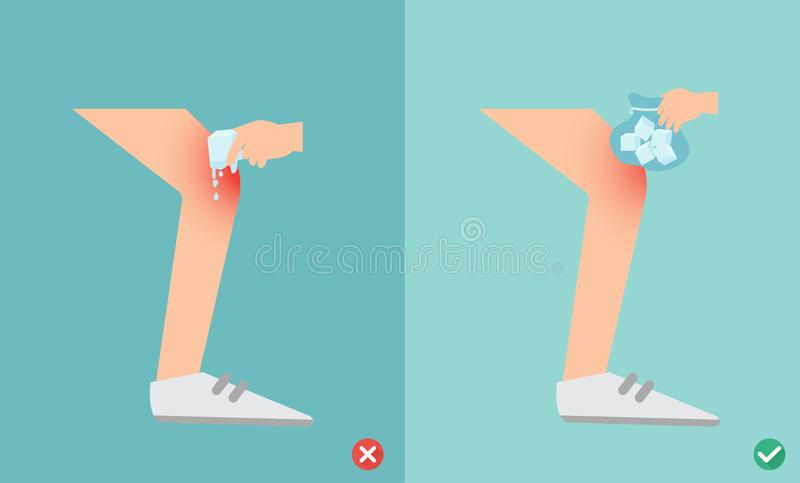
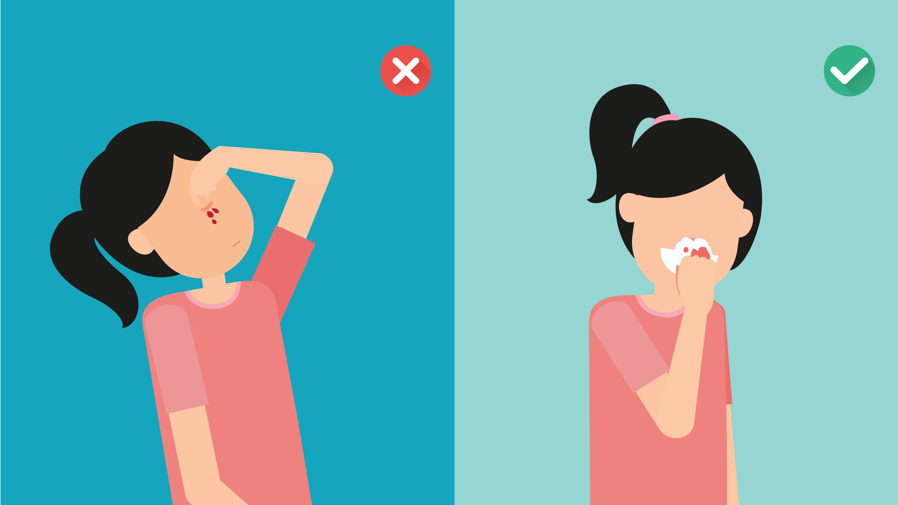

ادويتي
الرئيسية
خدمات الموقع
الادويه
الاسعافات الاوليه
التعليمات و التنبيهات
الامراض
البرد و الانفلونزا
الآم عظام ، مفاصل و عضلات
الآم الجهاز الهضمي
العنايه بالعيون
مسكن للالم
تواصل معنا
خلك safety مع ادويتي
الرئيسية
الاسعافات الاولية


Previous
Next
نزيف الانف :
الانحناء قليلًا إلى الأمام في أثناء الجلوس، أو الوقوف، مع تجنب الاستلقاء، أو ميل الرأس للخلف
إمساك الأنف من الجزء الناعم (ليس العظمي) من الناحيتين، مع تجنب الضغط على جانب واحد فقط، حتى لو كان النزيف على جانب واحد فقط
الضغط على الأنف لمدة خمس دقائق على الأقل للأطفال، ومن 10 إلى 15 دقيقة للبالغين، مع عدم القيام بفك الضغط عن الأنف
يمكن وضع كمادات باردة، أو كيس ثلج على الأنف، حيث يساعد الأوعية الدموية على الانقباض
لدغة الحيوانات :
غسل الجرح كله جيدًا بالماء والصابون
وضع كريم المضاد الحيوي وتغطية العضة بضمادة نظيفة
راجع الطبيب فورا اذا :
كان الجرح عميقًا أو إذا لم تكن متأكدًا من مدى خطورته
الجلد ممزق بشدة أو مسحوق أو ينزف بقدر كبير
احظت زيادة في تورم أو احمرارًا أو ألمًا أو حكة، وهي علامات تحذير من حدوث عدوى
انواع الحروق :
( الدرجة الاولى ) وجود احمرار ،جفاف والتهاب طفيف أو تورم في الجلد
ضع الجلد المحروق تحت الماء البارد حتى يخف الألم.
حماية الحرق من خلال التغطية بضمادة معقمة أو قطعة قماش نظيفة.
( الدرجة الثانيه ) تورم وإفراز سوائل من المنطقة المصابة
غمر المكان المصاب في الماء البارد او وضع منشفة نظيفة مبللة بالماء البارد
حاول أن تجعل المصاب يشرب كميات كبيرة من الماء
لا تستخدم الثلج
ضع الشخص المصاب مسطحاً مع رفع قدميه إلى الاعلى.
( الدرجة الثالثه ) الجلد مشمعاً أو رمادياً وأحياناً مفحما لا يشعر المصاب بأي ألم في المكان
التوجه للمستشفى فورا
الاختناق :
قم بصفع الشخص على ظهره 5 مرات
توجيه 5 ضغطات على البطن
ناوِّب بين الصفعات الخمس على الظهر والضغطات الخمس لحين خروج الجسم المعيق